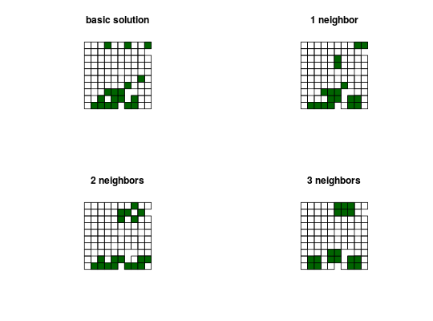

Add constraints to a conservation problem to ensure that all selected planning units have at least a certain number of neighbors.
add_neighbor_constraints(x, k, ...)
| x |
|
|---|---|
| k |
|
| ... | arguments passed to |
ConservationProblem-class object with the constraint
added to it.
constraints for all the available constraints,
and penalties.
# create basic problem p1 <- problem(sim_pu_polygons, sim_features, "cost") %>% add_min_set_objective() %>% add_relative_targets(0.2) # create problem with constraints that require 1 neighbor p2 <- p1 %>% add_neighbor_constraints(1) # create problem with constraints that require 2 neighbors p3 <- p1 %>% add_neighbor_constraints(2) # create problem with constraints that require 3 neighbors p4 <- p1 %>% add_neighbor_constraints(3) # solve problems s <- list(solve(p1), solve(p2), solve(p3), solve(p4))#> Optimize a model with 5 rows, 90 columns and 450 nonzeros #> Variable types: 0 continuous, 90 integer (90 binary) #> Coefficient statistics: #> Matrix range [2e-01, 9e-01] #> Objective range [2e+02, 2e+02] #> Bounds range [1e+00, 1e+00] #> RHS range [6e+00, 1e+01] #> Found heuristic solution: objective 4135.27 #> Presolve time: 0.00s #> Presolved: 5 rows, 90 columns, 450 nonzeros #> Variable types: 0 continuous, 90 integer (90 binary) #> Presolved: 5 rows, 90 columns, 450 nonzeros #> #> #> Root relaxation: objective 3.490348e+03, 17 iterations, 0.00 seconds #> #> Nodes | Current Node | Objective Bounds | Work #> Expl Unexpl | Obj Depth IntInf | Incumbent BestBd Gap | It/Node Time #> #> 0 0 3490.34813 0 4 4135.27447 3490.34813 15.6% - 0s #> H 0 0 3597.0951275 3490.34813 2.97% - 0s #> #> Explored 0 nodes (17 simplex iterations) in 0.00 seconds #> Thread count was 1 (of 4 available processors) #> #> Solution count 2: 3597.1 4135.27 #> Pool objective bound 3490.35 #> #> Optimal solution found (tolerance 1.00e-01) #> Best objective 3.597095127479e+03, best bound 3.490348127696e+03, gap 2.9676% #> Optimize a model with 95 rows, 90 columns and 1084 nonzeros #> Variable types: 0 continuous, 90 integer (90 binary) #> Coefficient statistics: #> Matrix range [2e-01, 1e+00] #> Objective range [2e+02, 2e+02] #> Bounds range [1e+00, 1e+00] #> RHS range [6e+00, 1e+01] #> Found heuristic solution: objective 4073.37 #> Presolve time: 0.00s #> Presolved: 95 rows, 90 columns, 1084 nonzeros #> Variable types: 0 continuous, 90 integer (90 binary) #> Presolved: 95 rows, 90 columns, 1084 nonzeros #> #> #> Root relaxation: objective 3.490882e+03, 19 iterations, 0.00 seconds #> #> Nodes | Current Node | Objective Bounds | Work #> Expl Unexpl | Obj Depth IntInf | Incumbent BestBd Gap | It/Node Time #> #> 0 0 3490.88205 0 6 4073.36976 3490.88205 14.3% - 0s #> H 0 0 3589.0089332 3490.88205 2.73% - 0s #> #> Explored 0 nodes (19 simplex iterations) in 0.01 seconds #> Thread count was 1 (of 4 available processors) #> #> Solution count 2: 3589.01 4073.37 #> Pool objective bound 3490.88 #> #> Optimal solution found (tolerance 1.00e-01) #> Best objective 3.589008933187e+03, best bound 3.490882045634e+03, gap 2.7341% #> Optimize a model with 95 rows, 90 columns and 1084 nonzeros #> Variable types: 0 continuous, 90 integer (90 binary) #> Coefficient statistics: #> Matrix range [2e-01, 2e+00] #> Objective range [2e+02, 2e+02] #> Bounds range [1e+00, 1e+00] #> RHS range [6e+00, 1e+01] #> Found heuristic solution: objective 5156.23 #> Presolve time: 0.00s #> Presolved: 95 rows, 90 columns, 1084 nonzeros #> Variable types: 0 continuous, 90 integer (90 binary) #> Presolved: 95 rows, 90 columns, 1084 nonzeros #> #> #> Root relaxation: objective 3.492475e+03, 24 iterations, 0.00 seconds #> #> Nodes | Current Node | Objective Bounds | Work #> Expl Unexpl | Obj Depth IntInf | Incumbent BestBd Gap | It/Node Time #> #> 0 0 3492.47490 0 6 5156.23161 3492.47490 32.3% - 0s #> H 0 0 3620.8724397 3492.47490 3.55% - 0s #> #> Explored 0 nodes (24 simplex iterations) in 0.00 seconds #> Thread count was 1 (of 4 available processors) #> #> Solution count 2: 3620.87 5156.23 #> Pool objective bound 3492.47 #> #> Optimal solution found (tolerance 1.00e-01) #> Best objective 3.620872439690e+03, best bound 3.492474904344e+03, gap 3.5460% #> Optimize a model with 95 rows, 90 columns and 1084 nonzeros #> Variable types: 0 continuous, 90 integer (90 binary) #> Coefficient statistics: #> Matrix range [2e-01, 3e+00] #> Objective range [2e+02, 2e+02] #> Bounds range [1e+00, 1e+00] #> RHS range [6e+00, 1e+01] #> Found heuristic solution: objective 6184.3 #> Presolve removed 1 rows and 1 columns #> Presolve time: 0.00s #> Presolved: 94 rows, 89 columns, 1074 nonzeros #> Variable types: 0 continuous, 89 integer (89 binary) #> Presolved: 94 rows, 89 columns, 1074 nonzeros #> #> #> Root relaxation: objective 3.503055e+03, 30 iterations, 0.00 seconds #> #> Nodes | Current Node | Objective Bounds | Work #> Expl Unexpl | Obj Depth IntInf | Incumbent BestBd Gap | It/Node Time #> #> 0 0 3503.05480 0 19 6184.30172 3503.05480 43.4% - 0s #> H 0 0 3646.0966743 3503.05480 3.92% - 0s #> #> Explored 0 nodes (30 simplex iterations) in 0.01 seconds #> Thread count was 1 (of 4 available processors) #> #> Solution count 2: 3646.1 6184.3 #> Pool objective bound 3503.05 #> #> Optimal solution found (tolerance 1.00e-01) #> Best objective 3.646096674255e+03, best bound 3.503054799250e+03, gap 3.9232%# plot solutions par(mfrow=c(2,2)) plot(s[[1]], main = "basic solution") plot(s[[1]][s[[1]]$solution_1 == 1, ], col = "darkgreen", add = TRUE) plot(s[[2]], main="1 neighbor") plot(s[[2]][s[[2]]$solution_1 == 1, ], col = "darkgreen", add = TRUE) plot(s[[3]], main="2 neighbors") plot(s[[3]][s[[3]]$solution_1 == 1, ], col = "darkgreen", add = TRUE) plot(s[[4]], main="3 neighbors")plot(s[[4]][s[[4]]$solution_1 == 1, ], col = "darkgreen", add = TRUE)